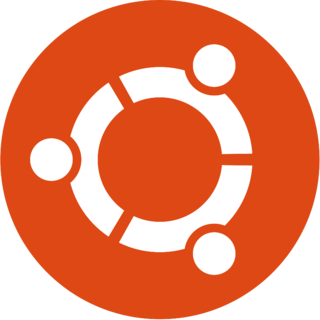

یونیکسیزم
مرجع فارسی توزیعهای لینوکس و یونیکس
توزیعها

اخبار ubuntu
اخبار فنی
اخبار LWN
اخبار لینوکس ژورنال
سیستمهای BSD
نقد و بررسی
مخازن
توزیعهای محبوب
بهروزرسانی
اوبونتو
بهروزرسانی اوبونتو
اخبار اخیر
بهروزرسانی اخبار
اخبار فنی
بهروزرسانی اخبار فنی
اخبار عمومی
بهروزرسانی اخبار عمومی
اخبار LWN
بهروزرسانی اخبار LWN
اخبار لینوکس ژورنال
بهروزرسانی اخبار لینوکس ژورنال
نقد و بررسی
بهروزرسانی نقد و بررسی
سیستمهای BSD
بهروزرسانی BSD
مخازن محبوب گیتهاب
CharleX WebOS
بهروزرسانی مخازن